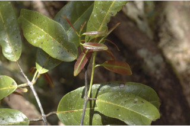
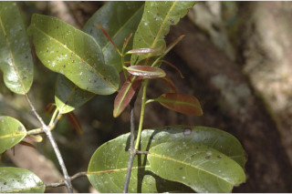

Large trees, up to 40 m tall.
40 ಮೀ ಎತ್ತರದವರೆಗೆ ಬೆಳೆಯುವ ದೊಡ್ಡಮರಗಳು.
40 മീറ്റര് വരെ ഉയരത്തില് വളരുന്ന വന്മരങ്ങള്.
பெரிய மரம் 40 மீ. உயரம் வரை வளரக்கூடியது.
Bark smooth, yellowish white, bright yellow when scrap; blaze reddish.
ತೊಗಟೆ ನಯವಾಗಿದ್ದು ಹಳದಿ ಮಿಶ್ರಿತ ಬಿಳಿ ಬಣ್ಣದಲ್ಲಿರುತ್ತವೆ;ಗೀಚಿದಾಗ ಉಜ್ವಲ ಹಳದಿ ಬಣ್ಣ ಹೊಂದಿರುತ್ತದೆ;ಕಚ್ಚು ಮಾಡಿದ ಜಾಗದಲ್ಲಿ ಕೆಂಪಾಗಿರುತ್ತದೆ.
മിനുസമാര്ന്ന, മഞ്ഞകലര്ന്ന വെളുത്ത നിറത്തിലുള്ള പുറംതൊലി, ചുരിയാല് കടും മഞ്ഞ നിറം; വെട്ടുപാടിന് ചുവപ്പുനിറം.
மரத்தின் பட்டை வழுவழுப்பானது, மஞ்சள் கலந்த வெள்ளை, பட்டையை சுரண்டினால் பளிச்சென்ற மஞ்சள் நிறத்துடன் காணப்படும்; உள்பட்டை சிவப்பு நிறமானது.
Branchlets terete, glabrous.
ಎಳೆಯ ಕಿರುಕೊಂಬೆಗಳು ದುಂಡಾಗಿದ್ದು ರೋಮರಹಿತವಾಗಿರುತ್ತದೆ.
ഉപശാഖകള് ഉരുതും, അരോമിലവും.
சிறிய நுனிக்கிளைகள் குறுக்குவெட்டுத் தோற்றத்தில் வளையமானது, உரோமங்களற்றது.
Leaves simple, usually opposite, sometimes alternate; petiole 0.8-2.5 cm long, terete; lamina 8-26 x 4-10 cm, elliptic-oblong, apex acute to acuminate, base rounded, margin entire, chartaceous or subcoriaceous; secondary_nerves 6-13 pairs; tertiary_nerves horizontally reticulo-percurrent.
ಎಲೆಗಳು ಸರಳವಾಗಿದ್ದು ಸಾಮಾನ್ಯವಾಗಿ ಅಭಿಮುಖಿಗಳಾಗಿದ್ದು ಪರ್ಯಾಯಜೋಡನಾ ವ್ಯವಸ್ಥೆಯಲ್ಲಿರುತ್ತವೆ;ಎಲೆ ತೊಟ್ಟುಗಳು 0.8 ರಿಂದ 2.5 ಸೆಂ.ಮೀ ಉದ್ದವಿದ್ದು ದುಂಡಾಗಿರುತ್ತವೆ;ಎಲೆಪತ್ರ 8 – 26 X 4 - 10 ಸೆಂ.ಮೀ ಗಾತ್ರ,ಅಂಡವೃತ್ತ-ಚತುರಸ್ರ ಆಕಾರದಲ್ಲಿದ್ದು, ,ಕ್ರಮೇಣ ಚೂಪಾಗುವ ತುದಿ, ದುಂಡಾದ ಬುಡ ಹೊಂದಿದ್ದು ನಯವಾದ ಅಂಚುಗಳನ್ನು ಹೊಂದಿರುತ್ತವೆ, ಎಲೆಗಳು ಕಾಗದವನ್ನು ಹೋಲುವ ಅಥವಾ ಉಪತೊಗಲನ್ನು ಹೋಲುವ ಮಾದರಿಯವು;ಎರಡನೇ ದರ್ಜೆಯ 6 ರಿಂದ 13 ನಾಳಗಳಿದ್ದು, ಅಡ್ಡವಾದ ಜಾಲಬಂಧ ವಿನ್ಯಾಸ ಹೊಂದಿದ ಮೂರನೇ ದರ್ರಜೆಯ ನಾಳಗಳಿರುತ್ತವೆ.
മിക്കവാറും സമ്മുഖമായും, ചിലപ്പോള് ഏകാന്തരമായും ക്രമീകരിച്ചിരിക്കുന്ന, ലഘുപത്രങ്ങള്; ഇലഞെട്ടിന് 0.8 സെ.മി മുതല് 2.5 സെ.മി വരെ നീളം, ഉരുതാണ്; പത്രഫലകത്തിന് 8 സെ.മി മുതല് 26 സെ.മി വരെ നീളവും 4 സെ.മി മുതല് 10 സെ.മി വരെ വീതിയും, ദീര്ഘവൃത്തീയ ആയതാകാരവും, കൂര്ത്തതോ ചെറുവോലോട് കൂടിയതോ ആയ പത്രാഗ്രം, വൃത്താകാരത്തിലുള്ള പത്രാധാരം, അവിഭജിത അരികുകള്, കടലാസ് പോലെത്തെയോ ഉപചര്മ്മിലോ ആയ പ്രകൃതം; 6 മുതല് 13 വരെ ജോഡി ദ്വിതീയ ഞരമ്പുകള്; തിരശ്ചീനജാലിത പെര്കറന്റ് ആയ ത്രിതീയ ഞരമ്പുകള്.
இலைகள் தனித்தவை, பொதுவாக எதிரடுக்கமானவை, சிலவற்றில் மாற்றுஅடுக்கமானவை காணப்படும்; இலைக்காம்பு 0.8-2.5 செ.மீ. நீளமானது, குறுக்குவெட்டுத் தோற்றத்தில் வளையமானது; இலை அலகு 8-26 X 4-10 செ.மீ., நீள்வட்டம்-நீள்சதுரம் வடிவம், அலகின் நுனி கூரியது முதல் அதிக்கூரியது, அலகின் தளம் வட்டமானது, அலகின் விளிம்பு முழுமையானது, சார்ட்டேசியஸ் அல்லது சப்கோரியேசியஸ்; இரண்டாம் நிலை நரம்புகள் 6-13 ஜோடிகள்; மூன்றாம் நிலை நரம்புகள் கிடைமட்ட வலைப்பின்னல் கொண்ட பெர்க்கரண்ட்.
Inflorescence panicles; flower petals dull red, disk bright red.
ಪುಷ್ಪಮಂಜರಿ ಕವಲೊಡೆಯುವ ಮಾದರಿಯವು; ಹೂಗಳ ಪುಷ್ಪದಳಗಳು ಮಸುಕು ಕೆಂಪು ವರ್ಣದಲ್ಲಿದ್ದು ಪುಷ್ಪಬಿಂಬ ಕೆಂಪು ಬಣ್ಣದಲ್ಲಿರುತ್ತದೆ..
പൂങ്കുല പാനിക്കിള് ആണ്; മുഷിഞ്ഞ ചുവപ്പുനിറത്തിലുള്ള പുഷ്പദളങ്ങള്, ഡിസ്ക് കടും ചുവപ്പ് നിറമാണ്.
பேனிக்கிள் மஞ்சரி; மலர் இதழ்கள் பளபளப்பில்லாத சிவப்பு, உட்புறத்தட்டு பளபளப்பான சிவப்பு நிறம்.
Capsule, 3-4 angled, elongated; seeds many, white, papery winged.
ಸಂಪುಟ ಫಲಗಳು 3 ರಿಂದ 4 ಕೋನಗಳ ಸಮೇತವಿದ್ದು ಧೀರ್ಘವಾದ ಉದ್ದಹೊಂದಿರುತ್ತದೆ ಬೀಜಗಳು ಬಹುಸಂಖ್ಯೆಯಲ್ಲಿದ್ದು, ಬಿಳಿ ಬಣ್ಣ ಹೊಂದಿದ್ದು, ಕಾಗದರೂಪಿ ರೆಕ್ಕೆಸಮೇತವಾಗಿರುತ್ತವೆ.
കായ, 3 ഓ 4 ഓ കോണോടുകൂടിയ, നീളത്തിലുള്ള കാപ്യസ്യൂള് ആണ്;
கேப்சூல், 3-4 முனைகள் உடையது, நீண்டது; விதைகள் அதிகம் உடையது, வெள்ளை நிறம், தாள் போன்ற இறகுடையது.


 
